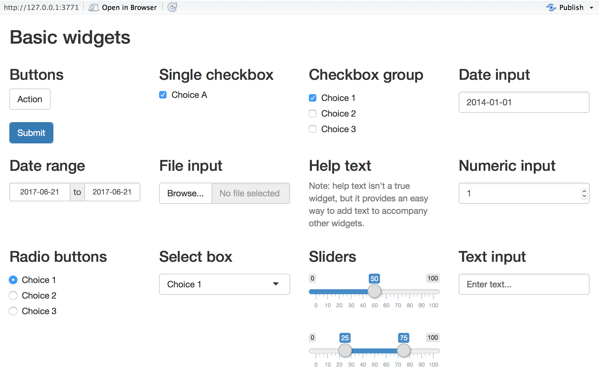
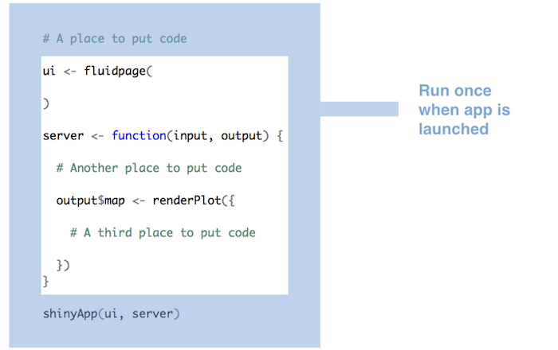
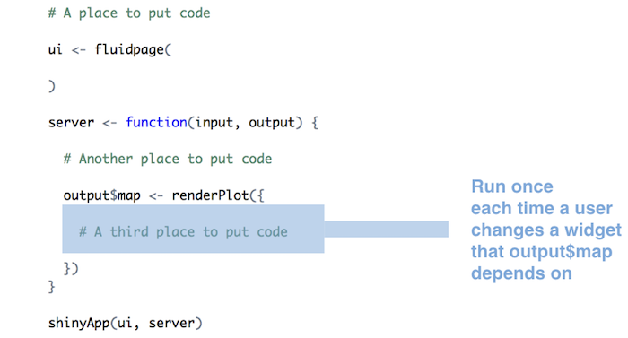

library(shiny)
ui <- ...
server <- ...
shinyApp(ui = ui, server = server)Building Interactive Web Apps
Objectives
In this module, we explore using the {shiny} package to build interactive web applications for data analysis and visualization. The following is based heavily and shamelessly on material from this excellent tutorial and related articles on using {shiny} from RStudio, as well as on this blog post by developer Zev Ross.
Preliminaries
Getting Started
{shiny} is an R package that makes it easy to build interactive web applications straight from R.
A typical {shiny} app contained in a single R script called “app.R”. You can create a Shiny app by making a new directory and saving an “app.R” file inside it. It is recommended that each “app.R” script is stored in its own unique directory.
NOTE: You do not need to call your app script “app.R”… any “.R” file with the appropriate {shiny} structure can be an app.
You can run a {shiny} app by passing the name of its directory to the function runApp(), i.e., by setting the path to the directory as an argument. If your app directory is inside your working directory, then the argument is just the name of the directory for your app. For example if your {shiny} app is in a directory called “my_app”, which is located in your working directory, you can run it with the following code: runApp("my_app").
If your “app.R” script is open in RStudio, you can also run it using the “RunApp” button at the top of the editor window.
NOTE: Your R session will be busy while any running {shiny} app is active, so you will not be able to run any other R commands. Basically, R is running behind the scenes, monitoring the app and executing the app’s reactions. To return to your R session, hit
or click the stop sign icon found in the upper right corner of the RStudio console panel.
Every “app.R” script has three components:
- a user interface object (called
ui) - a
serverfunction - a call to the
shinyApp()function
The user interface (ui) object controls the layout and appearance of your app. The server function contains the instructions that your computer needs to build your app. Finally the shinyApp() function creates Shiny app objects from an explicit UI/server pair.
Your “app.R” R script must also begin by loading the {shiny} package. Below is the skeleton of a typical {shiny} app.
To see an example app in action, run one of the following:
runExample("01_hello") # a histogram
runExample("02_text") # tables and data frames
runExample("03_reactivity") # a reactive expression
runExample("04_mpg") # global variables
runExample("05_sliders") # slider bars
runExample("06_tabsets") # tabbed panels
runExample("07_widgets") # help text and submit buttons
runExample("08_html") # Shiny app built from HTML
runExample("09_upload") # file upload wizard
runExample("10_download") # file download wizard
runExample("11_timer") # an automated timerBuilding a User Interface
Now that you understand the structure of a {shiny} app, it’s time to build our own first app from scratch!
Create a Skeleton App
You can do this in a file called “app.R” by entering the following code:
library(shiny)
# Define the UI ----
ui <- fluidPage()
# Define server logic ----
server <- function(input, output) {}
# Run the app ----
shinyApp(ui = ui, server = server){shiny} uses the function fluidPage() to create a display that automatically adjusts to the dimensions of your user’s browser window. You lay out the user interface of your app by placing elements in the fluidPage() function.
For example, the ui function below creates a user interface that has a title panel element (titlePanel()) and a sidebar layout (sidebarLayout()) format. The sidebar layout defines includes a sidebar panel (sidebarPanel()) and a main panel (mainPanel()). Note that all these elements are placed within the fluidPage() function.
NOTE: {shiny} offers many other options for designing the user interface besides
fluidPage()and various*Panels. You can explore these in the {shiny} documentation.
Modify your “app.R” file to the following and then run the app:
ui <- fluidPage(
titlePanel("title panel"),
sidebarLayout(
sidebarPanel("sidebar panel"),
mainPanel("main panel")
)
)titlePanel() and sidebarLayout() create a basic layout for your {shiny} app, but you can also create more advanced layouts. For example, you can use navbarPage() to give your app a multi-page user interface that includes a navigation bar. Or you can use fluidRow() and column() to build your layout up from a grid system. The Shiny Application Layout Guide provides further details about how you can modify the layout of your app.
You can add content to your {shiny} app by placing it inside one of the various *Panel() functions (e.g., sidebarPanel()). For example, the app above displays a character string in each of its panels. The words “sidebar panel” appear in the sidebar panel because we added that string as an argument to the sidebarPanel() function, e.g. sidebarPanel("sidebar panel").
Add HTML Context
To add more advanced text content, use one of {shiny}’s HTML tag functions. These functions parallel common HTML5 tags.
| {shiny} HTML Tag Function | HTML5 Equivalent | Creates |
|---|---|---|
| p | <p> | A paragraph of text |
| h1 | <h1> | A first level header |
| h2 | <h2> | A second level header |
| h3 | <h3> | A third level header |
| h4 | <h4> | A fourth level header |
| h5 | <h5> | A fifth level header |
| h6 | <h6> | A sixth level header |
| a | <a> | A hyper link |
| br | <br> | A line break (e.g. a blank line) |
| div | <div> | A division of text with a uniform style |
| span | <span> | An in-line division of text with a uniform style |
| pre | <pre> | Text ‘as is’ in a fixed width font |
| code | <code> | A formatted block of code |
| img | <img> | An image |
| strong | <strong> | Bold text |
| em | <em> | Italicized text |
| HTML | Directly passes a character string as HTML code |
To place a text element of one of these types in your app, pass the appropriate {shiny} function and argument as an argument to one of the *Panel() functions in the ui section of your app. The text will appear in the corresponding panel of your web page. You can place multiple elements in the same panel if you separate them with a comma.
CHALLENGE
Replace the “title panel” text in the
titlePanel()of your app with an h1 element that says “My First Web App”.Replace the “main panel” text in the
mainPanel()of your app with an h3 element that says “Wow, I’m creating a webpage and web server!”.Add an h4 element to the
mainPanel()that says “This is really cool.”.
Show Code
library(shiny)
# Define the UI ----
ui <- fluidPage(
titlePanel(h1("My First Web App")),
sidebarLayout(
sidebarPanel("sidebar panel"),
mainPanel(
h3("Wow, I'm creating a webpage and web server!"),
h4("This is really cool!")
)
)
)
# Define server logic ----
server <- function(input, output) {}
# Run the app ----
shinyApp(ui = ui, server = server)Style HTML Content
You can use html tag attribute “style” to style the HTML text element.
For example, replace this line in your ui code…
h4("This is really cool.")
with…
h4("This is really cool.", style = "color:blue; text-align:center")
… and then rerun your app.
To insert an image into your webpage, you can use the img() function and give the name of your image file as the “src” argument (e.g., img(src = "my_image.png")). You must spell out this argument since img() passes your input to an HTML tag, and “src”is what the tag expects.
You can also include other HTML-friendly parameters for your image such as height= and width= - e.g., img(src = "my_image.png", height = 72, width = 72), where height and width numbers will refer to pixels.
The img() function from {shiny} looks for your image file in a specific place. Your file must be in a folder named www located in the same directory as the “app.R” script. {shiny} treats this directory in a special way… it will share any file placed here with your user’s web browser, which makes the www a great place to store images, css (“cascading style sheet”) files, and other things the web browser will need to build web components of your app.
CHALLENGE
- Insert an image into the
sidebarPanel()of your app, replacing the existing text. Also pass a “style” to the HTML element to center it.
Replace the sidebar panel line with…
sidebarPanel(
img(src = "zombie.png", width = 100),
style = "text-align:center"
)… and then rerun your app.
Adding Control Widgets
So far, all our app does is create a static web page, but we can add control widgets and elements whose display updates when we change a value in a control to make our webpage interactive. A widget is a web element that users can interact with. They collect a value from the user and, when a user changes the widget, the value will change as well. Widgets thus provide a way for your users to send messages to the {shiny} app.
{shiny} comes with a family of pre-built widgets, each created with a correspondingly named R function (and additional packages exist that you can use to extend the family of widgets). For example, {shiny} provides a function named actionButton() that creates an button and a function named sliderInput() that creates a slider bar.

You can add widgets to your webpage in the same way that you added other types of HTML content. To add a widget, place its corresponding function in one of the *Panel elements in your ui object.
Each widget function requires several arguments. The first two arguments for each widget are:
- A name for the widget:The user will not see this name, but you can use it to access the widget’s value. The name should be a character string.
- A label: This label will appear with the widget in your app. It should be a character string, but it can be an empty string ““, e.g.,
label = "".
In this example, the name is “submit” and the label is “SUBMIT”:
actionButton("submit", label = "SUBMIT")
The remaining arguments vary from widget to widget, depending on what the widget needs to do its job. They include things like initial values, ranges, and increments. You can find the exact arguments needed by a widget on the widget function’s help page, (e.g., ?selectInput()).
CHALLENGE
Add a button labeled “SUBMIT” to the sidebarPanel of your app below the image you already added and then rerun your app.
NOTE: To get your button to show up BELOW the image, you will need to also add one or more
br()(line break) elements to thesidebarPanel()element.
Replace the sidebar panel line with…
sidebarPanel(img(src = "zombie.png", width = 100),
br(),
br(),
actionButton("submit", "SUBMIT"),
style = "text-align:center"
),… and then rerun your app.
The Shiny Widgets Gallery provides templates that you can use to quickly add widgets to your {shiny} apps.
To use a template, visit the gallery. The gallery displays each of {shiny}‘s widgets, and demonstrates how the widgets’ values change in response to your input.
Select the widget that you want and then click the “See Code” button below the widget. The gallery will take you to an example app that describes the widget. To use the widget, copy and paste the code in the example’s “app.R” file to your “app.R” file in the desired place in your ui object.
Displaying Reactive Values
If we now want our web app to conduct some analysis or display some data visualization that responds to user input, we need to set up the ui and the associated server functions to create reactive output. This involves two basic steps:
- Adding an R object to our user interface.
- Telling {shiny} how to build that object in the
server()function. The object will be reactive if the code that builds it calls a widget value.
Step 1: Adding an R Object to the UI
{shiny} provides a family of functions that turn R objects into output for your user interface. Each function creates a specific type of output.
| {shiny} Output Function | Creates |
|---|---|
| dataTableOutput | DataTable |
| htmlOutput | raw HTML |
| imageOutput | image |
| plotOutput | plot |
| tableOutput | table |
| textOutput | text |
| uiOutput | raw HTML |
| verbatimTextOutput | text |
You can add output to the user interface in the same way that we added HTML elements and widgets, by placing the desired *Output() function inside one of the *Panel elements in the ui.
CHALLENGE
Let’s add a selectInput() popdown menu element to the sidebarPanel() of your app. This function takes up to four arguments, the element name, the element label, a vector of choices to select from, and the name of the default choice.
Replace the items in your sidebarPanel() with the following and rerun your app.
selectInput(
"favorite_monster",
label = "Choose one of the following...",
choices = c("Zombie", "Vampire", "Alien", "Werewolf"),
selected = "Zombie"
)Now add an empty line (br()) and a reactive textOutput() function to the mainPanel element of your app and also change some of the text in your h3() and h4() elements… it should now look like this…
mainPanel(
h3("Wanna see a picture of your favorite monster?"),
h4("This is really cool!"),
br(),
textOutput("favorite_monster")
)Notice that textOutput() takes an argument, in this case the character string “favorite_monster”. Each of the *Output() functions require a single argument: a character string that {shiny} uses as the name of your reactive element. Your users will not see this name, but you will use it later.
Step 2: Provide R Code to Build the Reactive Object
Placing a function in the ui tells {shiny} where to display your object. Next, you need to tell {shiny} how to build the object.
We do this by providing the R code that builds the object in the server() function.
The server() function builds a list-like object named “output” that contains all of the code needed to update the R objects in your app. Each R object needs to have its own entry in the list.
You can create an entry by defining a new element for output within the server() function, like below. The element name should match the name of the reactive element that you created in the ui.
In the server function below, output$favorite_monster matches textOutput("favorite_monster") in your ui.
Modify the server() function in your app to look like the code below and then run your app.
server <- function(input, output) {
output$favorite_monster <- renderText({"MY FAVORITE"})
}Each render*() function takes a single argument: an R expression surrounded by braces, {}. The expression can be one simple line of text, or it can involve many lines of code, as if it were a complicated function call.
Think of this R expression as a set of instructions that you give {shiny} to store for later. {shiny} will these instructions when you first launch your app and then will re-run the instructions every time it needs to update your object.
For this to work, your expression should return the object you have in mind (a piece of text, a plot, a data frame, etc.). You will get an error if the expression does not return an object, or if it returns the wrong type of object.
Thus far, the text returned is not reactive. It will not change even if you manipulate the selectInput() widget of the app. But we can make the text reactive by asking {shiny} to call a widget value when it builds the text.
Notice that the server() function has two arguments, input= and output=. Like output, input is also a list-like object. It stores the current values of all of the widgets in your app. These values will be saved under the names that you gave the widgets in your ui. We have a widget named “favorite_monster” in our ui, and this value is stored as input$favorite_monster and gets updated every time we change the value of the widget.
{shiny} will automatically make an object reactive if the object incorporates an input value. For example, we can make our server() function create a reactive line of text by calling the value of the selectInput() widget to build the text.
Again, modify the server() function in your app to look like the code below and then run your app.
server <- function(input, output) {
output$favorite_monster <- renderText({paste0("You have picked... ", input$favorite_monster)})
}{shiny} tracks which outputs depend on which widgets. When a user changes a widget, {shiny} rebuilds all of the outputs that depend on that widget, using the new value of the widget as it goes.
Let’s add another element to the main panel of our app to display an image of the monster you have chosen. Add two more lines to the mainPanel() so that it now looks like this…
mainPanel(
h3("Wanna see a picture of your favorite monster?"),
h4("This is really cool!"),
br(),
textOutput("favorite_monster"),
br(),
uiOutput("monster_image")
)We also have to add another reactive element in the server() section of our app…
output$monster_image <- renderUI({
img_src <- case_when(
input$favorite_monster == "Zombie" ~ "zombie.png",
input$favorite_monster == "Vampire" ~ "vampire.png",
input$favorite_monster == "Alien" ~ "alien.png",
input$favorite_monster == "Werewolf" ~ "werewolf.png"
)
img(src = img_src, height = 300)
})Once you have made these additions, save and run your app!
NOTE: Click
Show Codebelow to view the complete code for this app.
Show Code
# monster_picker.R
library(shiny)
# Define the UI ----
ui <- fluidPage(
titlePanel(h1("Monster Picker")),
sidebarLayout(
sidebarPanel(
selectInput("favorite_monster",
label = "Choose one of the following...",
choices = c("Zombie", "Vampire", "Alien", "Werewolf"),
selected = "Zombie"
)
),
mainPanel(
h3("Wanna see a picture of your favorite monster?"),
h4("This is really cool!"),
br(),
textOutput("favorite_monster"),
br(),
uiOutput("monster_image")
)
)
)
# Define server logic ----
server <- function(input, output) {
output$favorite_monster <- renderText({
paste0("You have picked ", input$favorite_monster)
})
output$monster_image <- renderUI({
img_src <- case_when(
input$favorite_monster == "Zombie" ~ "zombie.png",
input$favorite_monster == "Vampire" ~ "vampire.png",
input$favorite_monster == "Alien" ~ "alien.png",
input$favorite_monster == "Werewolf" ~ "werewolf.png"
)
img(src = img_src, height = 300)
})
}
# Run the app ----
shinyApp(ui = ui, server = server)This is how you create reactivity with {shiny} – by connecting the values of “input” to the objects in “output”. {shiny} takes care of all of the other details.
Loading in a Data from a File
To load in data from file to use in a {shiny} visualization, we have to have our app execute some kind of read*() function specifying the path to the file. We also have to have {shiny} load any libraries we might need to visualize our data. Below, we are going to use the {DT} library to make a nicely formatted table of data and {ggplot2} to build graphs. {shiny} will execute the commands we give it apart from the ui and server sections of our script, but where we place those commands will determine when and how many times they are run (or rerun), which can affect the performance of our app.
- {shiny} will run the whole script the first time we call
runApp(). This causes {shiny} to execute the server function. Code put before theuistep will thus run one time.

Alternatively we can put code inside the server() function. For each time that a new user visits the app, {shiny} will run the server function again. The server() function helps {shiny} build a distinct set of reactive objects for each user, but it is not run repeatedly.
Finally, we can put code inside the render*() function. With this setup, {shiny} will run the function every time a user changes the value of a widget.

These patterns of behavior suggest that you should do the following:
Put code for sourcing scripts, loading libraries, and reading data sets at the beginning of
app.Routside of theserver()function. {shiny} will only run this code once, which is all you need to set your server up to run the R expressions contained inserver().Define user-specific objects inside the
server()function, but outside of anyrender*()calls. These would be objects that you think each user will need their own personal copy of, e.g., an object that records the user’s session information. This code will be run once per user.Only place code that {shiny} must rerun to build an object inside of a
render*()function. {shiny} will rerun all of the code in arender*()chunk every time a user changes a widget mentioned in the chunk. This can be quite often.
You should generally avoid placing code inside a render*() function that does not need to be there. Doing so will slow down the entire app.
Example Linear Model Visualizer App
We are now going to use some of the above techniques to build a functional web app that loads in data from the “zombies.csv” file we have been using, displays the data in a table, and then lets us interactively explore simple and multiple regression linear model to generate a table of beta coefficients and plot bivariate scatterplots and boxplots.
CHALLENGE
Step 1
- Create a new {shiny} app called “lm.R” with the three standard sections of a {shiny} app:
library(shiny)
ui <- fluidPage()
server <- function(input,output){}
shinyApp(ui = ui, server = server)Step 2
- Add to the
uiatitlePanel()with anh1element you call “Simple LM Visualizer” and asidebarLayout()withsidebarPanel()andmainPanel()elements. Also add adataTableOutput()andplotOutput()element to yourmainPanel(). Set the names for these to “datatable” and “plot”, respectively. We also set the width of thesidebarPanel()andmainPanel()to 5 and 7 units, respectively. This is because the layout system that {shiny} uses is based on dividing the browser window into a grid with 12 columns.
ui <- fluidPage(
titlePanel(h1("Simple LM Visualizer")),
sidebarLayout(
sidebarPanel(width = 5,
),
mainPanel(width = 7,
dataTableOutput("datatable"),
plotOutput("plot")
)
)
)Step 3
- Add code to the start of your app to load in the {DT} and {tidyverse} (and, by extension, the {dplyr} and {ggplot2}) libraries and to read our zombie apocalypse survivors dataset into the app as a variable named d when the app starts up.
library(DT)
library(tidyverse)
library(broom)
f <- "https://raw.githubusercontent.com/difiore/ada-datasets/main/zombies.csv"
d <- read_csv(f, col_names = TRUE)Step 4
- Use the {dplyr} verb
select()to winnow the dataset to the following five variables from the dataset: height, weight, age, gender, and major. Convert the variables gender and major to be factors. Also, create two variables r and p that are vectors of the possible quantitative “response” variables (height, weight, and age) and possible “predictor” variables (all of the possible variables, both quantitative and categorical).
d <- select(d, height, weight, age, gender, major)
d$gender <- factor(d$gender)
d$major <- factor(d$major)
r <- c("height", "weight", "age")
p <- names(d)Step 5
Modify the default server() function as follows…
server <- function(input, output) {
output$datatable <-
renderDataTable(d, options = list(
paging = TRUE,
lengthMenu = list(c(5, 10, 25, -1), c('5', '10', '25', 'All')),
pageLength = 5
))
}Now run your app… what does it do?
Step 6
- Next, modify your sidebar to include two
selectInput()popdown menus. The first popdown allows you to select a variable to be a response variable:
selectInput(
"response",
label = "Choose a response variable...",
choices = c("", r)
)NOTE: The “” is needed in
choices = c()to allow NO VARIABLE to be the default value
The second popdown allows you to select one or more variables as predictor variables:
selectInput(
"predictors",
label = "Choose one or more predictor variables...",
choices = p,
multiple = TRUE
)- Also add two other output variables to the sidebar. The first will be used to display the linear model we construct…
textOutput("model")… and the second will be used to display the results of the model.
tableOutput("modelresults")Step 7
- Add the following code chunks to your
server()function:
The first code chunk creates a reactive variable, m(), the value of which will be updated every time that the input$response or input$predictors values change as a user interacts with our app. The value returned by the m() reactive function is either NULL (if no response or predictor variable are chosen by the user) or a text version of a linear model formula (e.g., “height ~ weight + age”).
m <- reactive({
mod <- NULL
if (input$response == "" | length(input$predictors) == 0) {
return(mod)
}
mod <- paste0(input$response, " ~ ", input$predictors[1])
if (length(input$predictors) > 1) {
for (i in 2:length(input$predictors)) {
mod <- paste0(mod, " + ", input$predictors[i])
}
}
return(mod)
})A second code chunk prints out the lm() being fitted.
output$model <- renderText({
paste0("Model: ", print(m()))
})A third code chunk outputs a table of coefficients resulting from the linear model formula stored in m(), and it updates every time the user changes input$response or input$predictors because doing that updates the value of m() the output function first confirms that a valid linear model has been constructed.
output$modelresults <- renderTable(
{
if (!is.null(m())) {
res <- lm(data = d, formula = m())
res <- as.data.frame(coefficients(res))
names(res) <- "Beta"
res
}
},
width = "100%",
rownames = TRUE,
striped = TRUE,
spacing = "s",
bordered = TRUE,
align = "c",
digits = 3
)Finally, the last code chunk uses {ggplot2} to graph the relationship between the variables we have selected as input$response and input$predictors.
Note that this output function first confirms that a valid linear model has been constructed and whether there is one or more than one predictor variable. What output gets plotted depends on the number and type(s) of the predictor variable(s).
With one predictor, the output may be either a scatterplot with a fitted regression line (if input$predictors is a continuous variable) or a violin + scatter plot (if input$predictors is a factor variable).
With two predictors, at least one of which is a factor, the output may be scatterplots or violin + scatter plots, faceted by (one of) the factors.
With two continuous predictor variables, or with more than two predictor variables, no plot is created.
output$plot <- renderPlot({
if (!is.null(m()) & length(input$predictors) == 1) {
y <- input$response
x <- input$predictors
if (class(d[[x]]) != "factor") {
p <- ggplot(data = d, aes(x = .data[[x]], y = .data[[y]])) +
geom_point() +
geom_smooth(method = lm)
} else {
p <- ggplot(data = d, aes(x = .data[[x]], y = .data[[y]])) +
geom_violin() +
geom_jitter(width = 0.2, alpha = 0.5)
}
p <- p + xlab(x) + ylab(y) +
theme(axis.text.x = element_text(angle = 90, hjust = 1))
p
} else if (!is.null(m()) & length(input$predictors) == 2) {
y <- input$response
x <- input$predictors
if (class(d[[x[1]]]) == "factor" & class(d[[x[2]]]) == "factor") {
p <- ggplot(data = d, aes(x = .data[[x[1]]], y = .data[[y]])) +
geom_violin() +
geom_jitter(width = 0.2, alpha = 0.5) +
facet_wrap(~ d[[x[2]]])
p <- p + xlab(x[1]) + ylab(y)
} else if (class(d[[x[1]]]) != "factor" & class(d[[x[2]]]) == "factor") {
p <- ggplot(data = d, aes(x = .data[[x[1]]], y = .data[[y]])) +
geom_point() +
geom_smooth(method = lm) +
facet_wrap(~ d[[x[2]]])
p <- p + xlab(x[1]) + ylab(y)
} else if (class(d[[x[1]]]) == "factor" & class(d[[x[2]]]) != "factor") {
p <- ggplot(data = d, aes(x = .data[[x[2]]], y = .data[[y]])) +
geom_point() +
geom_smooth(method = lm) +
facet_wrap(~ d[[x[1]]])
p <- p + xlab(x[2]) + ylab(y)
} else {
p <- NULL
}
p <- p + theme(axis.text.x = element_text(angle = 90, hjust = 1))
p
}
})Step 8
- Run and play with your app!
NOTE: Click
Show Codebelow to view the complete code for this app.
Show Code
# lm.R code
library(shiny)
library(DT)
library(tidyverse)
library(broom)
f <- "https://raw.githubusercontent.com/difiore/ada-datasets/main/zombies.csv"
d <- read_csv(f, col_names = TRUE)
d <- select(d, height, weight, age, gender, major)
d$gender <- factor(d$gender)
d$major <- factor(d$major)
r <- c("height", "weight", "age")
p <- names(d)
ui <- fluidPage(
titlePanel(h1("Simple LM Visualizer")),
sidebarLayout(
sidebarPanel(
width = 5,
selectInput(
"response",
label = "Choose a response variable...",
choices = c("", r)
),
selectInput(
"predictors",
label = "Choose one or more predictor variables...",
choices = p,
multiple = TRUE
),
textOutput("model"),
tableOutput("modelresults")
),
mainPanel(
width = 7,
dataTableOutput("datatable"),
plotOutput("plot")
)
)
)
server <- function(input, output) {
m <- reactive({
mod <- NULL
if (input$response == "" | length(input$predictors) == 0) {
return(mod)
}
mod <- paste0(input$response, " ~ ", input$predictors[1])
if (length(input$predictors) > 1) {
for (i in 2:length(input$predictors)) {
mod <- paste0(mod, " + ", input$predictors[i])
}
}
return(mod)
})
output$datatable <-
renderDataTable(d, options = list(
paging = TRUE,
lengthMenu = list(c(5, 10, 25, -1), c("5", "10", "25", "All")),
pageLength = 5
))
output$model <- renderText({
paste0("Model: ", print(m()))
})
output$modelresults <- renderTable(
{
if (!is.null(m())) {
res <- lm(data = d, formula = m())
res <- as.data.frame(coefficients(res))
names(res) <- "Beta"
res
}
},
width = "100%",
rownames = TRUE,
striped = TRUE,
spacing = "s",
bordered = TRUE,
align = "c",
digits = 3
)
output$plot <- renderPlot({
if (!is.null(m()) & length(input$predictors) == 1) {
y <- input$response
x <- input$predictors
if (class(d[[x]]) != "factor") {
p <- ggplot(data = d, aes(x = .data[[x]], y = .data[[y]])) +
geom_point() +
geom_smooth(method = lm)
} else {
p <- ggplot(data = d, aes(x = .data[[x]], y = .data[[y]])) +
geom_violin() +
geom_jitter(width = 0.2, alpha = 0.5)
}
p <- p + xlab(x) + ylab(y) +
theme(axis.text.x = element_text(angle = 90, hjust = 1))
p
} else if (!is.null(m()) & length(input$predictors) == 2) {
y <- input$response
x <- input$predictors
if (class(d[[x[1]]]) == "factor" & class(d[[x[2]]]) == "factor") {
p <- ggplot(data = d, aes(x = .data[[x[1]]], y = .data[[y]])) +
geom_violin() +
geom_jitter(width = 0.2, alpha = 0.5) +
facet_wrap(~ d[[x[2]]])
p <- p + xlab(x[1]) + ylab(y)
} else if (class(d[[x[1]]]) != "factor" & class(d[[x[2]]]) == "factor") {
p <- ggplot(data = d, aes(x = .data[[x[1]]], y = .data[[y]])) +
geom_point() +
geom_smooth(method = lm) +
facet_wrap(~ d[[x[2]]])
p <- p + xlab(x[1]) + ylab(y)
} else if (class(d[[x[1]]]) == "factor" & class(d[[x[2]]]) != "factor") {
p <- ggplot(data = d, aes(x = .data[[x[2]]], y = .data[[y]])) +
geom_point() +
geom_smooth(method = lm) +
facet_wrap(~ d[[x[1]]])
p <- p + xlab(x[2]) + ylab(y)
} else {
p <- NULL
}
p <- p + theme(axis.text.x = element_text(angle = 90, hjust = 1))
p
}
})
}
shinyApp(ui = ui, server = server)